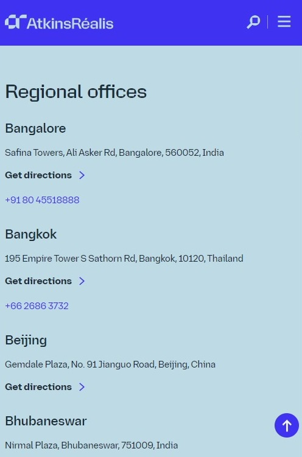

PARC Alignment
The elements of this type of the Design Principle should have visual connection with another element, whether that's an obvious connection such as in a table or a subtle one (invisble lines). Elements should not be randomly placed. Visual disconnection is the biggest cause of unpleasant looking documents. Use a grid when it's applicable to do so, and always use strong alignments. I talked about alignments in my last post, Typography, so you can check that out for more.
PARC Contrast
This is mostly used to emphasise the difference between selected elements, and is created when two elements are very different. Contrast creates visual interest for the user and can be used in many different ways.
PARC Proximity
When page elements are in proximity with one another, we call this a visual unit. Visual units create less clutter on a page, and gives structure to the information you are displaying. It also means that information is more likely to be taken in and remembered when in one, related visual unit. In design, related elements should be grouped together. For example, contact details on a business card would be one visual unit of related information.